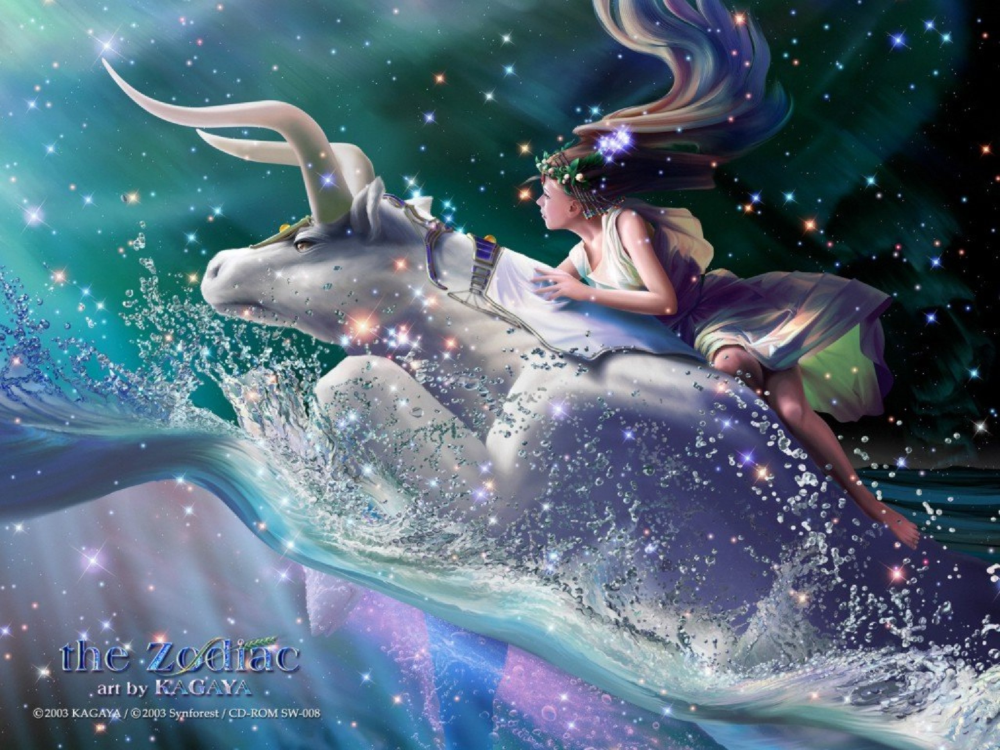
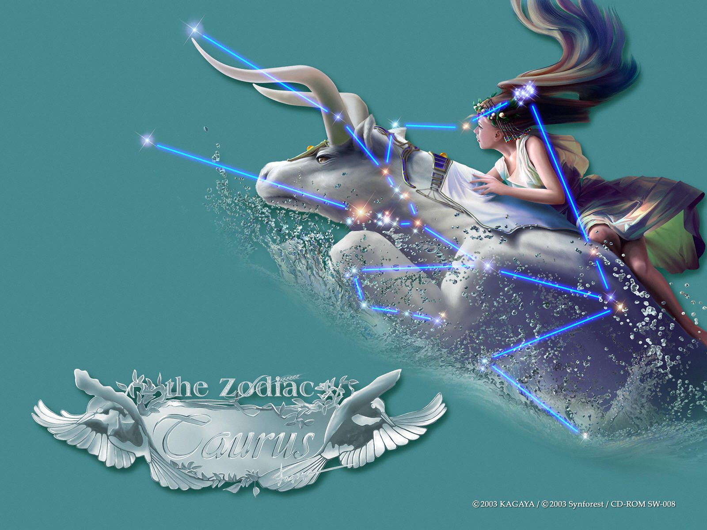
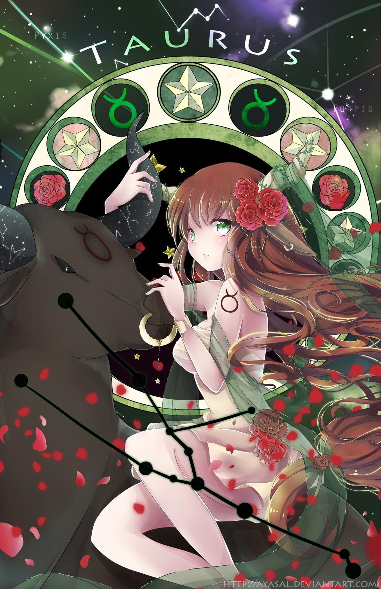

KIM NGƯU
Là biểu tượng của đất. Sao chiếu mệnh là sao Kim. Người cung Taurus đại diện cho nghệ thuật, vẻ đẹp trong mọi hình thức, và cả sức mạnh nữa (không chỉ là sức mạnh cơ bắp). Người cung Taurus rất thực tế, độc đoán trong khi yêu (trên cả hai phương diện vật chất và tinh thần) và họ thích việc đều đặn, kể cả trong đời sống tình yêu của họ. Để giành được sự an toàn, chung thuỷ, họ thường sử dụng những đặc tính của họ: sự chống đối, sự im lặng, sự kiên nhẫn và kinh nghiệm từng trải. Họ ít khi mất tự chủ, nhưng khi họ thật sự tức giận, họ sẽ trở nên bạo lực. Đó là lí do tại sao họ cần phải tìm một người bạn thích hợp.
Trong tình yêu, người Taurus là mẫu người hoàn hảo, họ rất chung thuỷ và không bao giờ kiêu ngạo. Những nghề nghiệp thích hợp nhất cho người Taurus: trang trí nội thất, giáo viên, đầu bếp và mọi công việc có liên quan đến đất và tự nhiên. Đây là một cung sao trông như rất thoải mái, nhưng chỉ sau khi đã đạt được một danh hiệu nào đó, dĩ nhiên rồi.
2, Mô tảNgười ở sao Kim Ngưu rất đơn giản, dễ hiểu. Những gì bạn thấy là những gì mà họ có. Họ thích chiếm hữu mọi thứ, đặc biệt là thức ăn. Thậm chí họ còn thích ăn phần của người khác, vì với họ, làm đầy cái bao tử là rất quan trọng.
Họ làm việc chậm chạp. Bạn sẽ không bao giờ thấy một người sao Kim Ngưu quyết định vội vàng. Không ưa thay đổi, đặc biệt là các mối quan hệ, vì họ là những người rất trung thành. Bạn sẽ rất tự hào khi có người bạn kim Ngưu vì sự duyên dáng và tính sáng tạo của họ. Họ thích hoa, âm nhạc và kịch nghệ… Họ sẽ là người bạn tuyệt nhất mà bạn từng có.
3, Tính cách cơ bảnKim Ngưu đều hi vọng thiên hạ thái bình, họ không dùng lý trí khống chế hành vi bản thân và quyết tâm bảo dảm cuộc sống sung sướng ngọt ngào thoả mãn của họ không bao giờ bị lung lay. Họ luôn khát vọng và theo đuổi một cuộc sống hạnh phúc, đó chính là tư tưởng: “Hưởng thụ cuộc sống từng ngày, không cần phải vì những thứ khó đạt mà đánh mất đi những sở thích của bản thân; những thứ khó đạt như thế nào cho dù đã nắm bắt trong tay rồi, cũng không thể xứng đáng được với những nỗ lực đã phải bỏ ra. Hãy để cho lòng mình được thoải mái rộng rãi một chút- nếu không phải là những người gây rối luôn muốn gây trở ngại cho tiền dồ thuận lợi của bạn, thì nên dĩ hoà vi quý, không nên sử dụng vũ lực. Vạn nhất khi con trâu đực bị ép phải dùng vũ lực, nó sẽ dừng lại dẫm lên kẻ địch của nó, dùng sừng của mình để làm kẻ thù bị thương, hoặc để hất chúng lên không trung”.
Họ không bao giờ xâm phạm những lợi ích của người khác để trục lợi. Họ không phải là những phần tử hiếu chiến, nhưng nếu có người dám chủ động thách thức, họ sẽ vô cùng tức giận, dốc toàn lực để tấn công. Đây chính là lí do tại sao rất ít người dám mạo hiểm đi chọc tức chòm Kim Ngưu, thông thường mọi người đều để cho những người thuộc chòm Kim Ngưu làm việc dựa vào câu châm ngôn mà họ thích nhất: “Mưu cầu chiến thắng trong ổn định”.
Trong nhiều trường hợp, chòm Kim Ngưu đều quyết tâm dựa vào sự bến bỉ, không vội vã để đạt được mục đích của họ- nhưng trong những tình huống cần phải tiếp thu những quan niệm mới, hoặc lập tức đưa ra quyết định, Kim Ngưu lại không thể trở thành những người chiến thắng, lúc đó, điều khiến họ thương tâm là những đối thủ có tư duy nhạy bén, hành động nhanh nhẹn, tràn đầy tinh thần cải cách. Cho dù là như vậy, nhưng thể lực sung mãn, tình yêu thiên nhiên, cách sống không lo nghĩ, thoải mái, phóng khoáng của Kim Ngưu cũng đủ để khiến cho người khác phải ngưỡng mộ.
Họ là người có thể sáng tạo ra một bầu không khí hài hoà, thoải mái, hơn nữa trong cuộc sống họ có thể chuyên chú vào công việc, vui với công việc mà không mệt mỏi, lượng công việc hàng tuần của họ đủ để khiến cho những người thuộc chòm khác phải bận trong nhiều tuần. Họ không thể chịu đựng được những người thiếu bền bỉ trong cuộc sống, không có trí tiến thủ.
Trong nhiều trường hợp, chòm Kim Ngưu đều quyết tâm dựa vào sự bến bỉ, không vội vã để đạt được mục đích của họ- nhưng trong những tình huống cần phải tiếp thu những quan niệm mới, hoặc lập tức đưa ra quyết định, Kim Ngưu lại không thể trở thành những người chiến thắng, lúc đó, điều khiến họ thương tâm là những đối thủ có tư duy nhạy bén, hành động nhanh nhẹn, tràn đầy tinh thần cải cách. Cho dù là như vậy, nhưng thể lực sung mãn, tình yêu thiên nhiên, cách sống không lo nghĩ, thoải mái, phóng khoáng của Kim Ngưu cũng đủ để khiến cho người khác phải ngưỡng mộ.
Họ là người có thể sáng tạo ra một bầu không khí hài hoà, thoải mái, hơn nữa trong cuộc sống họ có thể chuyên chú vào công việc, vui với công việc mà không mệt mỏi, lượng công việc hàng tuần của họ đủ để khiến cho những người thuộc chòm khác phải bận trong nhiều tuần. Họ không thể chịu đựng được những người thiếu bền bỉ trong cuộc sống, không có trí tiến thủ.
Kim Ngưu không thích làm việc độc lập, để phát huy được khả năng của mình tốt hơn, họ cùng tổ chức thành một tập thể đoàn kết, mọi người đều là thành viên hạnh phúc trong tâp thể này. Trong phương diện ăn mặc, Kim Ngưu không thích lối mới mẻ lập dị, chỉ cần thoải mái là được rồi, họ không coi trọng những phong cách cá nhân gì đó. Quần áo cũ là của họ, người khác tốt nhất đừng nên can thiệp vào.
Sự kiên nhẫn, phục tùng, kiên định trước sau như một, tôn sùng hưởng thụ vật chất, nhưng lại khảng khái độ lượng đầy tình yêu thương, khá hiếu khách, hơn nữa lại rất ít khi đưa ra những cam kết không sát với thực tế, đây chính là những đặc trưng của chòm Kim Ngưu; chứng tỏ họ không bao giờ là những người nằm mơ giữa ban ngày, mơ mộng hão huyền, hơn nữa họ cũng không thể chung sống lâu dài với những người nằm mơ ban ngày.
Đương nhiên, đôi khi, Kim Ngưu có thể sẽ chiếm một số những tài sản vật chất mà mình không dùng hết, hoặc chọn hình thức hưởng thụ vật chất vượt quá khả năng kinh tế của mình để có được một cuộc sống thoải mái hơn. Trong trường hợp thông thường, mục đích tích luỹ nhiều tài sản vật chất của họ là để bảo đảm chắc chắn mình không đến nỗi phải chịu những khổ sở đói rét.
4, Phương thức tư duy, kỹ xảo giao lưu và khả năng thích ứng với công việcMột câu châm ngôn mà chòm Kim Ngưu thích vận dụng trên các phương diện của cuộc sống thường ngày, là “ Dục tốc bất đạt”. Dùng thuật ngữ của nhà tâm lý học để nói, chòm Kim Ngưu là những người mắc chứng bệnh thích dùng ngôn ngữ, trước khi họ thực hiện các kiến nghị và kế hoạch, họ luôn suy nghĩ kỹ càng đến từng ngóc ngách nhỏ của vấn đề. Những người được truyền đạt khi thể hiện ra thái độ nóng vội bất an, đang nghe nói thì chen vào, hoặc muốn đối phương giảm bớt đi những từ ngữ rườm rà sẽ khiến chòm Kim Ngưu nổi cáu. Họ đúng là mắc bệnh thích vận dụng ngôn ngữ, khi nói về bất cứ chuyện gì họ cũng đều thêm vào câu “Lưới trời lồng lộng, thưa mà khó lọt”, không có yếu tố nào quan trọng bị họ bỏ qua, họ không có vấn đề nào là chưa được giải đáp, họ không để lọt bất cứ một chi tiết nào.Theo những người có tư duy nhanh nhạy, nhanh mồm nhanh miệng thuộc chòm sao khác, cách làm này của Kim Ngưu là quá tốn thời gian; nhưng có khi trong làm ăn, cách làm này vẫn có được giá trị nhất định.
Trong bất cứ công việc nào cần có uy tín và trách nhiệm cao, Kim Ngưu sẽ trở thành những người xuất sắc. Họ luôn ý thức được một cách mạnh mẽ giá trị của tiền và vật chất, hơn nữa họ thường nỗ lực làm việc để có được thù lao hậu hĩnh. Cho dù Kim Ngưu có chút năng khiếu nghệ thuật, nhưng sức tưởng tượng kém khi làm công việc có thù lao hậu hĩnh cũng khiến cho họ cảm thấy thất vọng về bản thân mình. Họ không thể thích nghi với những thay đổi liên tục phát sinh trong sự vật hàng ngày; nếu có người thúc giục họ làm việc với tốc độ cao, thì không lâu sau, họ sẽ bắt đầu oán giận những người đó. Sai lầm của Kim Ngưu phạm phải không thể là do vội vã cẩu thả gây ra, mà có thể là do quá cẩn thận, hành động chậm chạp gây ra. Khi Kim Ngưu đang suy tính về một hành động nào đó có thể đem lại lợi ích tốt đẹp hay không, thì họ cũng để tuột khỏi tầm tay rất nhiều cơ hội.
Ngôn từ của Kim Ngưu và phương thức giao lưu của họ đều rất dài dòng, còn có khi rất vô vị, hơn nữa, họ thường không mẫn cảm với những nỗi đau của những người không được kiên cường giống như họ. Nhưng dù thế nào chăng nữa, họ làm việc không thể thiếu suy xét. Khi họ phải dùng liều thuốc khá đắng, họ luôn thích ăn một thìa đường, vì vậy họ hiểu được trong lúc qua lại giao tiếp với người khác nói một vài câu đường mật ôn hoà sẽ có thể thu được những hiệu quả tốt ngoài trí tưởng tượng. Một ưu điểm khác của Kim Ngưu lại là trong khi giao tiếp với mọi người, họ có thể bình tĩnh, lắng nghe đối phương ba hoa khuếch trương- điểm này cũng là điểm mà các chòm sao khác nên học tập.
Tóm lại bạn nhận thức được rằng, Kim Ngưu có thể xây dựng được mối quan hệ bạn bè hoặc đồng nghiệp vô cùng mĩ mãn với những người muốn được nghe những kiến nghị chu đáo, mong muốn có được món tiền lớn mà không cần mạo hiểm, hoặc những người muốn giành được thành tích cao trong sự nghiệp dựa trên một nền tảng nhỏ mà vững chắc. Khi cần mọi người biểu thị tình cảm bột phát, trong những tình huống khẩn cấp, cần phải xử lý nhanh, Kim Ngưu luôn không thành công.